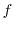
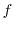

This command is a general dynamic programming based alignment procedure for aligning sequences, structures or a combination of the two. It is loosely based on the program COMPARER [Šali & Blundell, 1990]. SALIGN can be used to generate multiple protein structures/sequences alignments or to align two blocks of sequences/structures that are in memory.
See also Section 6.31 for utility scripts to simplify the high-level usage of SALIGN.
Please note that the method is still in development, and has not yet been fully benchmarked. As with any other alignment method, generated alignments should be assessed for quality.
Broadly classifying, three different types of protein alignment categories are tackled by this command:
The command incorporates the functionality of several old MODELLER commands (alignment.align(), alignment.align2d(), alignment.malign(), alignment.align3d(), and alignment.malign3d()). Some of the examples below illustrate the equivalent script files to replace the old alignment commands with alignment.salign().
In addition to these, this command has several new alignment features including profile-profile sequence alignments and a dendrogram based multiple sequence/structure alignment among others.
All pair-wise alignments make use of local or global dynamic programming. A switch from one to another can be effected by setting local_alignment to True or False. The dynamic programming can be carried out using affine gap penalties (as previously used in alignment.align(), by setting gap_function to False) or an environment dependent gap penalty function (as used in alignment.align2d(), by setting gap_function to True). (Please note that the default gap_penalties_1d parameters are optimal for the affine gap penalty; see the align2d examples for reasonable parameters if you wish to use the environment dependent gap penalty.) All arguments that associated to the alignment.align() and alignment.align2d() commands apply.
If at least one of the blocks in a pairwise alignment consists of structures, dynamic programming can be performed using structure dependent gap penalties.
On successful completion, an SalignData object is returned, from which some of the calculated data can be queried. For example, if you save this in a variable 'r', the following data are available:
The values of both improve_alignment and fit are used in the calculation of the position feature. That is, the initial alignment and the orientation of the coordinates can be selected not to change at all during the calculation of the inter-molecular distance matrix.
When the calculation of the inter-molecular distance matrix is finished, all the structures in the second sub-alignment are rotated and translated following the optimal rotation and translation of the second average on the first average. These superpositions prepare the individual structures for the next of the stages of the progressive multiple alignment, and also orient all the structures for writing out to atom files with a '_fit.pdb' extension if write_fit = True. If fit_pdbnam = False, the PDB filenames in the output alignment file will not have the '_fit.pdb' extensions. Thus, feature 2 needs to be selected by feature_weight[2] if you wish to write out the structures superposed according to the tree-following procedure; also, fit_on_first must be False, otherwise the structures are written out superposed on the first structure according to the final alignment (see also below).
The alignment produced within the routine that calculates does not generally correspond to the alignment calculated based on . Therefore, the multiply superposed structures are not necessarily superposed based on the final multiple alignment produced by alignment.salign(). If you wish such a superposition, you can use alignment.malign3d() with fit = False and write_fit = True (the meaning of fit is different between alignment.salign() and alignment.malign3d()).
Unless the position feature is selected, the initial alignment does not matter. If the position feature is selected, a good starting alignment is a multiple sequence alignment, obtained either by alignment.malign() or by alignment.salign() used without the position feature (the initial alignment can also be prepared using the position feature). If the position feature is used, each pair of structures needs to have at least 3 aligned residues at all points during the alignment.
There are several possibilities as to the final orientation of the input coordinates. If fit_on_first is True, all the coordinate sets are superposed on the first structure, using the final multi-feature multiple alignment. If fit_on_first is False, and position feature was used, and fit was True, the coordinates will be superposed in the progressive manner guided by the tree, by the routine that calculates the inter-molecular distance matrices; this superposition is based only on the positions of the selected atoms (feature 2), not on other features such as residue type, secondary, structure, etc. If improve_alignment is False, it does not make much sense to have fit = True (use fit_on_first = True).
For local alignments, the matrix offset variable is matrix_offset_3d.
# Illustrates the SALIGN multiple sequence alignment
from modeller import *
log.verbose()
env = environ()
env.io.atom_files_directory = ['.', '../atom_files']
aln = alignment(env, file='malign_in.ali')
aln.salign(overhang=30, gap_penalties_1d=(-450, -50),
alignment_type='tree', output='ALIGNMENT')
aln.write(file='malign.ali', alignment_format='PIR')
Profile comparisons are done in similarity space rather than distance space, so similarity_flag should be set to True. They will also currently only work with feature 1 (since feature 1 is the only feature which works both in similarity and in distance space) - the weights for all other features must be set to zero.
# profile-profile alignment using salign
from modeller import *
log.level(1, 0, 1, 1, 1)
env = environ()
aln = alignment(env, file='mega_prune.faa', alignment_format='FASTA')
aln.salign(rr_file='${LIB}/blosum62.sim.mat',
gap_penalties_1d=(-500, 0), output='',
align_block=15, # no. of seqs. in first MSA
align_what='PROFILE',
alignment_type='PAIRWISE',
comparison_type='PSSM', # or 'MAT' (Caution: Method NOT benchmarked
# for 'MAT')
similarity_flag=True, # The score matrix is not rescaled
substitution=True, # The BLOSUM62 substitution values are
# multiplied to the corr. coef.
#write_weights=True,
#output_weights_file='test.mtx', # optional, to write weight matrix
smooth_prof_weight=10.0) # For mixing data with priors
#write out aligned profiles (MSA)
aln.write(file='salign.ali', alignment_format='PIR')
# Make a pairwise alignment of two sequences
aln = alignment(env, file='salign.ali', alignment_format='PIR',
align_codes=('12asA', '1b8aA'))
aln.write(file='salign_pair.ali', alignment_format='PIR')
aln.write(file='salign_pair.pap', alignment_format='PAP')
# align2d/align using salign
# parameters to be input by the user
# 1. gap_penalties_1d
# 2. gap_penalties_2d
# 3. input alignment file
from modeller import *
log.verbose()
env = environ()
env.io.atom_files_directory = ['../atom_files']
aln = alignment(env, file='align2d_in.ali', align_codes='all')
aln.salign(rr_file='$(LIB)/as1.sim.mat', # Substitution matrix used
output='',
max_gap_length=20,
gap_function=True, # If False then align2d not done
feature_weights=(1., 0., 0., 0., 0., 0.),
gap_penalties_1d=(-100, 0),
gap_penalties_2d=(3.5, 3.5, 3.5, 0.2, 4.0, 6.5, 2.0, 0.0, 0.0),
# d.p. score matrix
#write_weights=True, output_weights_file='salign.mtx'
similarity_flag=True) # Ensuring that the dynamic programming
# matrix is not scaled to a difference matrix
aln.write(file='align2d.ali', alignment_format='PIR')
aln.write(file='align2d.pap', alignment_format='PAP')
Caution: The values of gap_penalties_2d have been optimized for similarity matrices. If using a distance matrix, you will need to derive new optimized values.
This section describes the use of SALIGN to produce a single alignment of multiple structures. If the best output alignment is desired, it is recommended to run SALIGN in an iterative fashion, to determine the best parameter values. A utility script is provided for this purpose - see iterative_structural_align().
The alignment of proteins within a sub-alignment does not change when the
sub-alignment is aligned with another protein or sub-alignment. The pairwise
alignment of sub-alignments is guided by the dendrogram. First, the most
similar pair of proteins are aligned. Second, the next most similar pair of
proteins are aligned, or the third protein is aligned with the sub-alignment
of the first two, as indicated by the dendrogram. This greedy, progressive
procedure requires
steps to align all  proteins, and each step
requires a pairwise alignment of two sub-alignments.
proteins, and each step
requires a pairwise alignment of two sub-alignments.
If in a multiple alignment, overhangs are to be penalized differently for the pairs of alignments that create the multiple, auto_overhang can be set to True. This will ensure that the value of overhang changes as overhang_factor times the numerical difference in the residues of the pair. Further, this is only effected if the difference is greater than overhang_auto_limit.
The dendrogram can be written out in a separate file by specifying the file name to dendrogram_file.
# Illustrates the SALIGN multiple structure/sequence alignment
from modeller import *
log.verbose()
env = environ()
env.io.atom_files_directory = ['.', '../atom_files']
aln = alignment(env)
for (code, chain) in (('1is4', 'A'), ('1uld', 'D'), ('1ulf', 'B'),
('1ulg', 'B'), ('1is5', 'A')):
mdl = model(env, file=code, model_segment=('FIRST:'+chain, 'LAST:'+chain))
aln.append_model(mdl, atom_files=code, align_codes=code+chain)
for (weights, write_fit, whole) in (((1., 0., 0., 0., 1., 0.), False, True),
((1., 0.5, 1., 1., 1., 0.), False, True),
((1., 1., 1., 1., 1., 0.), True, False)):
aln.salign(rms_cutoff=3.5, normalize_pp_scores=False,
rr_file='$(LIB)/as1.sim.mat', overhang=30,
gap_penalties_1d=(-450, -50),
gap_penalties_3d=(0, 3), gap_gap_score=0, gap_residue_score=0,
dendrogram_file='1is3A.tree',
alignment_type='tree', # If 'progresive', the tree is not
# computed and all structues will be
# aligned sequentially to the first
#ext_tree_file='1is3A_exmat.mtx', # Tree building can be avoided
# if the tree is input
feature_weights=weights, # For a multiple sequence alignment only
# the first feature needs to be non-zero
improve_alignment=True, fit=True, write_fit=write_fit,
write_whole_pdb=whole, output='ALIGNMENT QUALITY')
aln.write(file='1is3A.pap', alignment_format='PAP')
aln.write(file='1is3A.ali', alignment_format='PIR')
# The number of equivalent positions at different RMS_CUTOFF values can be
# computed by changing the RMS value and keeping all feature weights = 0
aln.salign(rms_cutoff=1.0,
normalize_pp_scores=False, rr_file='$(LIB)/as1.sim.mat', overhang=30,
gap_penalties_1d=(-450, -50), gap_penalties_3d=(0, 3),
gap_gap_score=0, gap_residue_score=0, dendrogram_file='1is3A.tree',
alignment_type='progressive', feature_weights=[0]*6,
improve_alignment=False, fit=False, write_fit=True,
write_whole_pdb=False, output='QUALITY')
The suboptimal alignment file can be converted into a set of real alignments using the alignment.get_suboptimals() method.
from modeller import *
log.verbose()
env = environ()
aln = alignment(env, file='fm07254_test.ali', alignment_format='PIR')
aln.salign(feature_weights=(1., 0, 0, 0, 0, 0), gap_penalties_1d=(-450, -50),
n_subopt = 5, subopt_offset = 15)
# Convert suboptimal alignment output file into actual alignments
f = open('suboptimal_alignments.out')
for (n, aln) in enumerate(aln.get_suboptimals(f)):
aln.write(file='fm07254_out%d.ali' % n)
# Demonstrating the use of alignment restraints, only available in
# align2d and salign:
from modeller import *
log.verbose()
env = environ()
# The special alignment entry '_fix_pos' has to be the last entry in the
# alignment array. Its sequence contains characters blank (or 0), 1, 2, 3,
# and 4 at the restrained alignment positions. The residue-residue score from
# the substitution matrix for these positions will be offset by the scalar
# value FIX_OFFSETS[0..4].
aln = alignment(env, file='fix_positions.ali', align_codes=('1leh', '3btoA',
'_fix_pos'))
# fix_offsets specifies the offset corresponding to character ' 1234' in the
# _fix_pos entry in the alignment
# (this offsets unlabeled positions for 0, the ones indicated by 1 by
# 1000, those indicated by 2 by 2000, etc.)
aln.salign(fix_offsets=(0, -10, -20, -30, -40),
gap_penalties_2d=(0, 0, 0, 0, 0, 0, 0, 0, 0), # Any values are
# possible here
local_alignment=False, # Local alignment works, too
gap_penalties_1d=(-600, -400)) # This is best with the default value
# of gap_penalties_2d
# Write it out, the _fix_pos is erased automatically in salign:
aln.write(file='fix_positions_salign.pap', alignment_format='PAP')
External weight matrix: An example of using feature 6.
# Reads an external matrix
from modeller import *
log.verbose()
env = environ()
aln = alignment(env, file='1dubA-1nzyA.ali', align_codes='all')
aln.salign(alignment_type='pairwise', output='',
rr_file='$(LIB)/blosum62.sim.mat',
#rr_file='$(LIB)/as1.sim.mat',
#max_gap_length=20,
gap_function=False,
input_weights_file='external.mtx', # External weight matrix
#weights_type='DISTANCE', # type of ext. wgt. mtx
# ensure appropriate gap penalites for the ext. matrix
#feature_weights=(1., 0., 0., 0., 0., 0.), gap_penalties_1d=(30, 26),
#write_weights=True, output_weights_file='score.mtx',
feature_weights=(1., 0., 0., 0., 0., 1.),
gap_penalties_1d=(-500, -300))
aln.write(file='output.ali', alignment_format='PIR')
aln.write(file='output.pap', alignment_format='PAP')
Multiple structure alignment according to a user specified dendrogram
The user has the option of inputting an  X
X  matrix from which a
dendrogram can be inferred. The multiple tree alignment is then confined to
follow this externally input dendrogram. To effect this, specify the name of
the external matrix file with the ext_tree_file variable.
matrix from which a
dendrogram can be inferred. The multiple tree alignment is then confined to
follow this externally input dendrogram. To effect this, specify the name of
the external matrix file with the ext_tree_file variable.
The gap correction function is , where and are the number of proteins in the two sub-alignments, is the number of gap-residue pairs, and is the number of gap-gap pairs when comparing protein positions from one sub-alignment with protein position from the other sub-alignment, is gap_residue_score and is gap_gap_score. The smaller (even negative) is gap_gap_score, and the larger is gap_residue_score, the more will the gaps be aligned with gaps.
For each pairwise alignment, the weight matrix
has dimensions  and
and  that correspond to the lengths of the sub-alignments to be aligned based on
the weight matrix
. The dissimilarity score for aligning position
that correspond to the lengths of the sub-alignments to be aligned based on
the weight matrix
. The dissimilarity score for aligning position  with
position
is calculated as
,
where the sum runs over all selected features 
, and
is a function that
may be used to correct the
score for the presence of gaps within the
sub-alignments (see below). A feature
is selected when its weight
(specified in feature_weights) is non-zero. The matrices
are normalized to have the mean of 0 and standard deviation of 1 when
normalize_pp_scores is True, but it is recommended not to use this
option for now (i.e., use feature_weights to scale the contributions of
the different features to the final
). The weights of 1 will weigh the
different features approximately evenly (the residue-residue dissimilarities
of feature 1 are scaled to a range from 0 to 1, the position differences of
feature 2 are in angstroms, the fractional solvent accessibility scores of
feature 3 and the secondary structure scores of feature 4 range from 0 to 2,
and the DRMS difference of feature 5 is expressed in angstroms).
with
position
is calculated as
,
where the sum runs over all selected features 
, and
is a function that
may be used to correct the
score for the presence of gaps within the
sub-alignments (see below). A feature
is selected when its weight
(specified in feature_weights) is non-zero. The matrices
are normalized to have the mean of 0 and standard deviation of 1 when
normalize_pp_scores is True, but it is recommended not to use this
option for now (i.e., use feature_weights to scale the contributions of
the different features to the final
). The weights of 1 will weigh the
different features approximately evenly (the residue-residue dissimilarities
of feature 1 are scaled to a range from 0 to 1, the position differences of
feature 2 are in angstroms, the fractional solvent accessibility scores of
feature 3 and the secondary structure scores of feature 4 range from 0 to 2,
and the DRMS difference of feature 5 is expressed in angstroms).
If you enable verbose logging with log.verbose(), there will be more output in the 'log' file, such as the dendrogram. The dendrogram can also be written out in a separate file by specifying the file name to dendrogram_file.
Argument output can contain the following values:
If write_fit is True, the fitted atom files are written out in their fitted orientations. For this and other options below, also read the text above.
If output_weights_file is specified, the dynamic programming weight matrix is written out into the file. (If it is None, no file is written out.)
If current_directory is True, the output _pdb.fit files will be written to the current directory. Otherwise, the output will be in the directory with the original files.
If write_whole_pdb is True, the whole PDB files are written out; otherwise only the parts corresponding to the aligned sequences are output.
If fit is False, the initial superposition is not changed. This is useful when all the structures have to be compared with a given alignment as is, without changing their relative orientation.
If fit_on_first is True, the structures are fit to the first structure according to the final alignment before they are written out.
If improve_alignment is False, the initial alignment is not changed, though the structures may still be superimposed if fit = True. This is useful when all the structures have to be superimposed with the initial alignment.